変身
特殊な姿になる(例外あり)
Guppy
変身パーツ

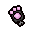
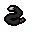
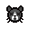
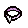

効果
見た目が猫っぽくなる。
飛行を得る。
攻撃が当たるたびに自分の攻撃力の2倍の威力を持つ青いハエを生み出す。(Repentanceでは50%の確率に変更)
Rebithから変身可能。
Beelzebub
変身パーツ


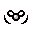

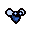


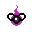
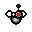
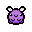

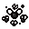
効果
ハエっぽい見た目になる。
飛行を得る。
ハエ系のモンスターからダメージを受けなくなる。
ハエ系のモンスターが自動的に青いハエになる。(青いハエは現在の攻撃力の2倍の威力)
がRepentanceで対象入り。
Rebitthから変身可能。
Funguy
変身パーツ


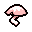
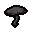
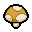
効果
キノコっぽくなる
赤HP+1
Afterbithから変身可能。
Seraphim
変身パーツ


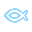
効果
天使っぽくなる。
飛行を得る。
ソウルハート+3
はRepentanceで対象から外れた。
Afterbithから変身可能。
Bob
変身パーツ

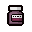

効果
Spun
変身パーツ

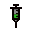


効果
ランダムなピルを1つ取得する。
攻撃力が+2.0、スピードが+0.15。
Repentanceではスピードが上がらなくなった。
Afterbithから変身可能。
Yes Mother?
変身パーツ
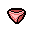


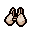
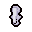

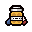
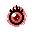


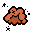


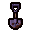
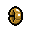
効果
Isaacのお母さんに変身する。
プレイヤーの後ろについて移動するMom's Kinfeが追加される
このナイフは敵の接触時にプレイヤーのティアの2倍ダメージを与える。
Afterbithから変身可能。
Conjoined
変身パーツ


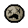
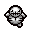
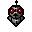


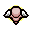


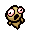


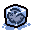


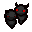
効果
Isaacの頬から顔が2つ生える。
The Wisの効果を持ち弾が3wayになる。
攻撃力が0.3下がり、ティアが少し減少する。
がRepentanceで対象入り。
Afterbithから変身可能。
Leviathan
変身パーツ
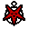
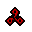


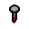

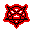

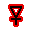
効果
クトゥルフ的な見た目になる。
ブラックハート+2、飛行を得る。
はRepentanceで対象から外れた。
Afterbithから変身可能。
Oh Crap
変身パーツ

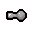

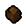


効果
アレな見た目になる。
うんちを破壊するたびに赤ハートを半分回復する。
はRepentanceで対象入り。
Afterbithから変身可能。
Bookworm
変身パーツ
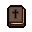
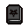


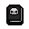

効果
25％の確率で追加の弾を発射する。
マルチウェイショットの効果に重複する。
Afterbith+から変身可能。
Adult
変身パーツ
効果
大人になる。
空の赤ハートコンテナ+1
Afterbith+から変身可能。
Spiderbaby
変身パーツ


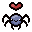
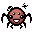


効果
勝手に動くクモのオプションを得る。
はRepentanceで対象入り。
Afterbith+から変身可能。
Stompy
変身パーツ
 (One makes your larger)
(One makes your larger)
効果
体を大きくするピル3つや体を大きくするアイテムで変身。
ダメージを受けると周囲にRock Wavesを発生することがある。
Repentanceから岩や破壊可能な障害物を破壊することができ、とげのついた岩はキャラのスピードやサイズ、角度によってはダメージを受けずに破壊できる
Afterbirt+から変身可能。
Superbum
変身パーツ
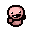

効果
キャラではなくパッシブアイテムが合体する。
それぞれのバムの効果を持ち、ピックアップを落とす量が2倍になる。
Afterbithから変身可能。